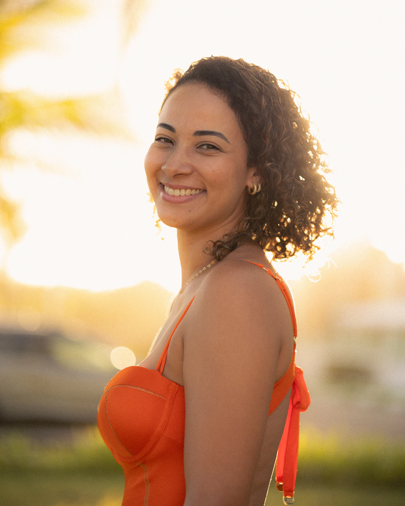

Cerita Pemotretan / artikel konsep
Potret Natural Dimulai dari Percakapan
Arahan yang sederhana, jeda yang cukup, dan persetujuan subjek lebih berguna daripada daftar pose yang panjang.

Dalam skenario sesi konsep ini, seorang peserta datang dengan kalimat, “Aku biasanya kaku kalau difoto.” Jawabannya tidak perlu berupa jaminan hasil. Mulailah dengan percakapan tentang foto itu akan dipakai untuk apa dan bagian mana dari prosesnya yang membuat ia ragu.
Sepakati tujuan sebelum mengarahkan
Foto profil untuk pekerjaan dan potret untuk catatan pribadi mempunyai kebutuhan berbeda. Tanyakan tempat foto akan ditampilkan, kesan yang diinginkan, dan apakah ada contoh yang disukai. Contoh membantu percakapan, tetapi jangan menjanjikan hasil yang persis sama.
Bicarakan juga batas nyaman: apakah boleh mengambil close-up, apakah peserta ingin melihat foto uji, dan apakah ada pose atau sudut yang tidak diinginkan. Izin untuk memotret bukan otomatis izin untuk mengunggah.
Berikan satu tugas kecil
Daripada memberi lima arahan sekaligus, minta peserta menghadap sedikit ke arah cahaya atau mengalihkan pandangan ke satu titik. Setelah itu berhenti dan lihat apakah posisi tersebut nyaman. Kalimat konkret lebih mudah diikuti daripada “coba lebih natural”.
Gerakan kecil bisa memberi titik awal: merapikan ujung lengan, menggeser berat badan, atau berjalan pelan. Jangan memaksakan tawa. Ekspresi netral juga dapat terasa personal jika sesuai dengan orang yang dipotret.
Tunjukkan, dengarkan, lalu beri jeda
Perlihatkan satu atau dua foto uji, bukan seluruh rentetan hasil. Tanyakan apakah foto itu sudah terasa seperti dirinya. Jika belum, cari tahu apakah masalahnya ada pada ekspresi, pakaian, sudut, atau konteks. Jawaban subjek membantu menentukan langkah berikutnya.
Jeda bukan waktu terbuang. Saat seseorang mulai lelah, berhenti sebentar sering lebih berguna daripada terus menekan rana. Akhiri sesi dengan mengulang kesepakatan pemilihan foto dan penggunaan hasilnya.
Coba sendiri
Latih satu sesi sepuluh menit bersama teman yang bersedia. Gunakan tiga arahan saja. Setelah selesai, minta ia memilih foto yang paling terasa mewakili dirinya dan dengarkan alasannya.
- Gunakan alat yang tersedia dan minta izin sebelum memotret orang.
- Simpan satu catatan untuk dibandingkan pada latihan berikutnya.